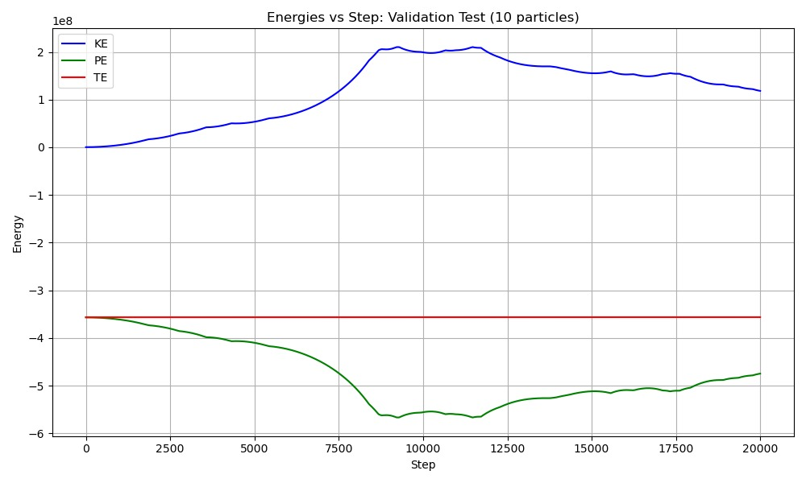

Particle Simulator
2D Physics Simulation: Gravity & Kinetic Collisions
Project Overview
This project simulates in 2 dimensions the kinetic and gravitational interactions of n spheroids in an optimized way. The simulation implements a Barnes-Hut algorithm for gravity and uses quadtree pruning for collision detection, achieving significant performance improvements.

Figure 1: Particle simulation with gravity and collision effects
Performance Analysis
Future: Runtime benchmarks
Energy Conservation
Future: Validation metrics
Additional media slots can be added by copying the .media-item structure
5000x
Speed Improvement
1000+
Particles
<1%
Energy Error
Technical Implementation
View implementation details
Core Components
- Physics Engine: Velocity Verlet integration with collision detection
- Optimization: Barnes-Hut algorithm for gravity, quadtree for collision pruning
- Visualization: GNUplot with RGB temperature mapping
- Data Management: CSV parameter input, cached frame storage
Recent Improvements
- 5000x performance improvement through algorithmic optimization
- Energy conservation within 1% for inelastic collisions
- Barnes-Hut gravity implementation with quadtree collision pruning
- Cache system to prevent RAM overflow for large simulations
Future Development
Near-term
- Further optimize Barnes-Hut parameters
- User-accessible configuration interface
- Clean up cache system
Long-term
- Parallel grid method for collision detection
- 3D visualization support
- Real-time parameter adjustment